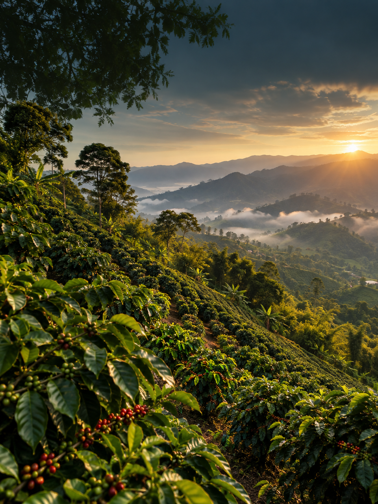

Respuestas recibidas
0
Gracias por compartir tu opinión.

Una bebida fría del Eje Cafetero
Del cafetal y el trapiche a tu mano.
Conoce la historiaCafetal en ladera, Eje Cafetero · Imagen generada para este proyecto
01 · Del origen a tu mano
02 · Lo que estás tomando
No contiene ninguno de los alérgenos mayores.
Contiene cafeína y azúcar natural de la panela.
03 · Tu opinión cuenta
Tu respuesta ya quedó registrada. Puedes ver cómo va la degustación en los resultados en vivo.
04 · Para seguir explorando
Degustación · Resultados en vivo
Gracias por compartir tu opinión.